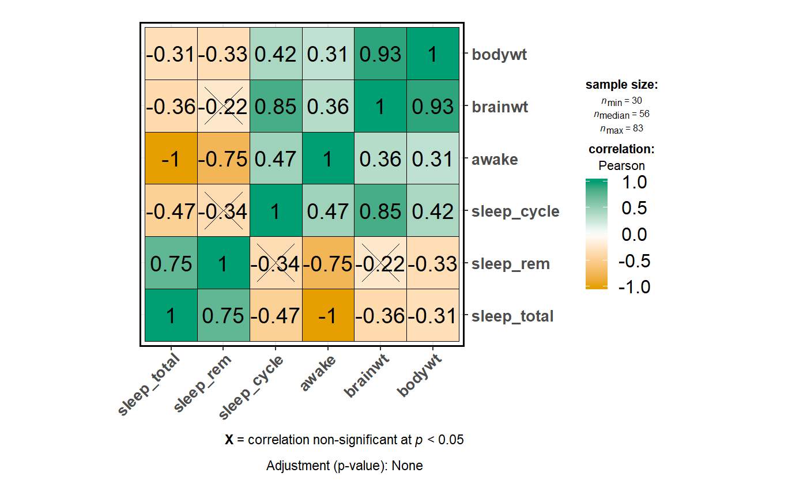

Visualization of a correlalogram (or correlation matrix)
ggcorrmat(data, cor.vars = NULL, cor.vars.names = NULL, output = "plot", matrix.type = "full", method = "square", corr.method = "pearson", type = NULL, exact = FALSE, continuity = TRUE, beta = 0.1, digits = 2, k = NULL, sig.level = 0.05, conf.level = 0.95, p.adjust.method = "none", hc.order = FALSE, hc.method = "complete", lab = TRUE, package = "RColorBrewer", palette = "Dark2", direction = 1, colors = c("#E69F00", "white", "#009E73"), outline.color = "black", ggtheme = ggplot2::theme_bw(), ggstatsplot.layer = TRUE, title = NULL, subtitle = NULL, caption = NULL, caption.default = TRUE, lab.col = "black", lab.size = 5, insig = "pch", pch = 4, pch.col = "black", pch.cex = 11, tl.cex = 12, tl.col = "black", tl.srt = 45, messages = TRUE, return = NULL)
Arguments
| data | Dataframe from which variables specified are preferentially to be taken. |
|---|---|
| cor.vars | List of variables for which the correlation matrix is to be
computed and visualized. If |
| cor.vars.names | Optional list of names to be used for |
| output, return | Character that decides expected output from this
function: |
| matrix.type | Character, |
| method | Character argument that decides the visualization method of
correlation matrix to be used. Allowed values are |
| corr.method, type | A character string indicating which correlation
coefficient is to be computed ( |
| exact | A logical indicating whether an exact p-value should be
computed. Used for Spearman's rho. For more details, see
|
| continuity | A logical. If |
| beta | A numeric bending constant for percentage bend robust correlation
coefficient (Default: |
| digits, k | Decides the number of decimal digits to be displayed
(Default: |
| sig.level | Significance level (Default: |
| conf.level | Scalar between 0 and 1. If unspecified, the defaults return
|
| p.adjust.method | What adjustment for multiple tests should be used?
( |
| hc.order | Logical value. If |
| hc.method | The agglomeration method to be used in |
| lab | Logical value. If |
| package | Name of package from which the palette is desired as string or symbol. |
| palette | Name of palette as string or symbol. |
| direction | Either |
| colors | A vector of 3 colors for low, mid, and high correlation values.
If set to |
| outline.color | The outline color of square or circle. Default value is
|
| ggtheme | A function, |
| ggstatsplot.layer | Logical that decides whether |
| title | The text for the plot title. |
| subtitle | The text for the plot subtitle. |
| caption | The text for the plot caption. If |
| caption.default | Logical that decides whether the default caption
should be shown (default: |
| lab.col | Color to be used for the correlation coefficient labels
(applicable only when |
| lab.size | Size to be used for the correlation coefficient labels
(applicable only when |
| insig | Character used to show specialized insignificant correlation
coefficients ( |
| pch | Decides the glyphs (read point shapes) to be used for
insignificant correlation coefficients (only valid when |
| pch.col, pch.cex | The color and the cex (size) of |
| tl.cex, tl.col, tl.srt | The size, the color, and the string rotation of text label (variable names, i.e.). |
| messages | Decides whether messages references, notes, and warnings are
to be displayed (Default: |
Value
Correlation matrix plot or correlation coefficient matrix or matrix of p-values.
References
https://indrajeetpatil.github.io/ggstatsplot/articles/web_only/ggcorrmat.html
See also
Examples
# for reproducibility set.seed(123) # if `cor.vars` not specified, all numeric varibles used ggstatsplot::ggcorrmat(data = iris)# to get the correlalogram # note that the function will run even if the vector with variable names is # not of same length as the number of variables ggstatsplot::ggcorrmat( data = ggplot2::msleep, cor.vars = sleep_total:bodywt, cor.vars.names = c("total sleep", "REM sleep") ) + # further modification using `ggplot2` ggplot2::scale_y_discrete(position = "right")#> Warning: No. of variable names doesn't equal no. of variables. #>#># to get the correlation matrix ggstatsplot::ggcorrmat( data = ggplot2::msleep, cor.vars = sleep_total:bodywt, output = "r" )#> # A tibble: 6 x 7 #> variable sleep_total sleep_rem sleep_cycle awake brainwt bodywt #> <chr> <dbl> <dbl> <dbl> <dbl> <dbl> <dbl> #> 1 sleep_total 1 0.75 -0.47 -1 -0.36 -0.31 #> 2 sleep_rem 0.75 1 -0.34 -0.75 -0.22 -0.33 #> 3 sleep_cycle -0.47 -0.34 1 0.47 0.85 0.42 #> 4 awake -1 -0.75 0.47 1 0.36 0.31 #> 5 brainwt -0.36 -0.22 0.85 0.36 1 0.93 #> 6 bodywt -0.31 -0.33 0.42 0.31 0.93 1# setting output = "p-values" (or "p") will return the p-value matrix ggstatsplot::ggcorrmat( data = ggplot2::msleep, cor.vars = sleep_total:bodywt, corr.method = "r", p.adjust.method = "bonferroni", output = "p" )#> # A tibble: 6 x 7 #> variable sleep_total sleep_rem sleep_cycle awake brainwt bodywt #> <chr> <dbl> <dbl> <dbl> <dbl> <dbl> <dbl> #> 1 sleep_total 0. 6.11e-12 3.43e- 2 0. 6.79e- 5 3.85e- 6 #> 2 sleep_rem 4.07e-13 0. 2.97e- 1 6.11e-12 7.27e- 2 1.13e- 2 #> 3 sleep_cycle 2.28e- 3 1.98e- 2 0. 3.43e- 2 2.23e- 9 3.18e- 5 #> 4 awake 0. 4.07e-13 2.28e- 3 0. 6.79e- 5 3.85e- 6 #> 5 brainwt 4.53e- 6 4.85e- 3 1.49e-10 4.53e- 6 0. 4.83e-17 #> 6 bodywt 2.57e- 7 7.52e- 4 2.12e- 6 2.57e- 7 3.22e-18 0.# setting `output = "ci"` will return the confidence intervals for unique # correlation pairs ggstatsplot::ggcorrmat( data = ggplot2::msleep, cor.vars = sleep_total:bodywt, p.adjust.method = "BH", output = "ci" )#> Note: In the correlation matrix, #> the upper triangle: p-values adjusted for multiple comparisons #> the lower triangle: unadjusted p-values. #>#>#> # A tibble: 15 x 7 #> pair r lower upper p lower.adj upper.adj #> <chr> <dbl> <dbl> <dbl> <dbl> <dbl> <dbl> #> 1 sleep_total-sleep_rem 0.752 0.617 0.844 2.92e- 12 0.531 0.877 #> 2 sleep_total-sleep_cycle -0.474 -0.706 -0.150 6.17e- 3 -0.786 0.0302 #> 3 sleep_total-awake -1.000 -1.000 -1.000 2.42e-226 -1.000 -1.000 #> 4 sleep_total-brainwt -0.360 -0.569 -0.108 6.35e- 3 -0.653 0.0257 #> 5 sleep_total-bodywt -0.312 -0.494 -0.103 4.09e- 3 -0.572 0.00539 #> 6 sleep_rem-sleep_cycle -0.338 -0.614 0.0120 5.84e- 2 -0.715 0.191 #> 7 sleep_rem-awake -0.752 -0.844 -0.617 2.91e- 12 -0.877 -0.531 #> 8 sleep_rem-brainwt -0.221 -0.476 0.0670 1.31e- 1 -0.580 0.209 #> 9 sleep_rem-bodywt -0.328 -0.535 -0.0826 9.95e- 3 -0.620 0.0452 #> 10 sleep_cycle-awake 0.474 0.150 0.706 6.17e- 3 -0.0302 0.786 #> 11 sleep_cycle-brainwt 0.852 0.709 0.927 2.42e- 9 0.603 0.950 #> 12 sleep_cycle-bodywt 0.418 0.0809 0.669 1.73e- 2 -0.0997 0.757 #> 13 awake-brainwt 0.360 0.108 0.569 6.35e- 3 -0.0257 0.653 #> 14 awake-bodywt 0.312 0.103 0.494 4.09e- 3 -0.00543 0.572 #> 15 brainwt-bodywt 0.934 0.889 0.961 9.16e- 26 0.858 0.970# modifying elements of the correlation matrix by changing function defaults ggstatsplot::ggcorrmat( data = datasets::iris, cor.vars = c(Sepal.Length, Sepal.Width, Petal.Length, Petal.Width), sig.level = 0.01, ggtheme = ggplot2::theme_bw(), hc.order = TRUE, matrix.type = "lower", outline.col = "white", title = "Dataset: Iris" )